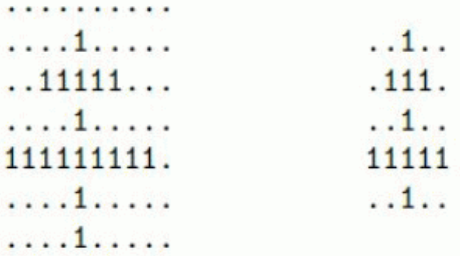
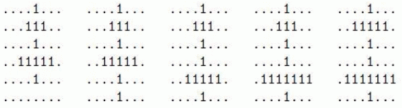

在 C 部落，双十字是非常重要的一个部落标志。所谓双十字，如下面两个例子，由两条水平的和一条竖直的 “1” 线段组成，要求满足以下几个限制：
所以上面右边的例子是满足要求的最小的双十字。
现在给定一个 $R \times C$ 的 $01$ 矩阵，要求计算出这个 $01$ 矩阵中有多少个双十字。
例如下面这个例子，$R=6,C=8$，$01$ 矩阵如下：

我们可以找到 $5$ 个满足条件的双十字，分别如下：

注意最终的结果可能很大，只要求输出双十字的个数 $\bmod 1,000,000,009$ 的值。
第一行为用空格隔开的两个正整数 $R$ 和 $C$，分别表示 $01$ 矩阵的行数和列数。
输入第二行是一个非负整数 $N$，表示 $01$ 矩阵中 “0” 的个数。接下来的 $N$ 行，每行为用空格隔开的两个正整数 $x$ 和 $y(1≤x≤R,1≤y≤C)$，表示 $(x,y)$ 是一个 “0”。数据保证 $N$ 个 “0” 的坐标两两不同。
数据保证 $R,C,N≤10000,R \times C≤1,000,000$。（事实上 $R \times C$ 可能稍大于原设定）
$D \bmod 1,000,000,009$ 的结果，其中 $D$ 为要求的 $01$ 矩阵中双十字的个数。
6 8 12 1 2 1 3 1 4 1 6 2 2 3 2 3 3 3 4 3 7 6 4 6 6 4 8
5
 Comet OJ
Comet OJ